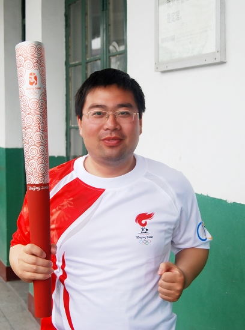
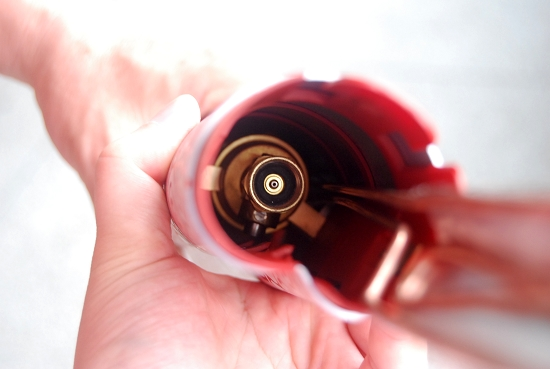
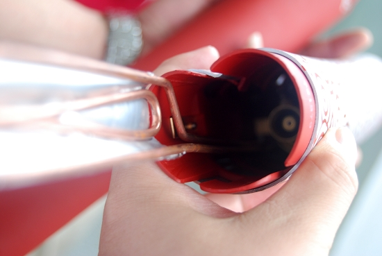

拆开奥运火炬看看
#1 拆开奥运火炬看看 作者：有志青年 发表时间：2008-5-28 14:45:29
像一个大的打火机



#2 Re:拆开奥运火炬看看 作者：小丸.net 发表时间：2008-5-28 19:17:46
问一下，奥运火炬用什么做燃料？#3 Re:拆开奥运火炬看看 作者：有志青年 发表时间：2008-5-28 19:22:19
这个我就不清楚了，其中的燃料箱已经被组委会取走了，这只火炬只能作为摆设了。
不过这个火炬和电视中各种宣传广告使用的火炬是不同的，这只火炬是有唯一的身份证编号的，而那些宣传用的则没有。
#4 Re:拆开奥运火炬看看 作者：小丸.net 发表时间：2008-5-28 23:02:13
我估计是93#汽油，都是从江阴拿的，难怪这几天江阴油荒，那油都卖到６００块一斤了~~~~~~
#5 Re:拆开奥运火炬看看 作者：百医天使 发表时间：2008-5-29 1:04:58
问一下，照片上的人是谁？#6 Re:Re:拆开奥运火炬看看 作者：小丸.net 发表时间：2008-5-29 9:38:55
引用：
原文由 百医天使 发表于 2008-5-29 1:04:58 :
问一下，照片上的人是谁？
有志啊。。。。你看，多帅。。
#7 Re:拆开奥运火炬看看 作者：有志青年 发表时间：2008-5-29 11:20:40
 那是肥头大耳，没刮胡子的我
那是肥头大耳，没刮胡子的我
#8 Re:拆开奥运火炬看看 作者：gerbo 发表时间：2008-5-30 13:50:41
 哇，有志大哥是奥运火炬手啊，真是羡慕~~！！！那个火炬可以保留吗？要是可以保留下来就特别有纪念意义了，恭喜有志大哥当选为火炬手，同时也见证了有志大哥的事业非常不错，同时祝愿有志大哥再接再厉，事业与爱好取得更大的进步！！
哇，有志大哥是奥运火炬手啊，真是羡慕~~！！！那个火炬可以保留吗？要是可以保留下来就特别有纪念意义了，恭喜有志大哥当选为火炬手，同时也见证了有志大哥的事业非常不错，同时祝愿有志大哥再接再厉，事业与爱好取得更大的进步！！ ~！
~！
#9 Re:拆开奥运火炬看看 作者：17号蓝星仔 发表时间：2008-6-1 1:49:11
 羡慕
羡慕
#10 Re:拆开奥运火炬看看 作者：孤傲 发表时间：2008-6-17 15:25:29
眼谗